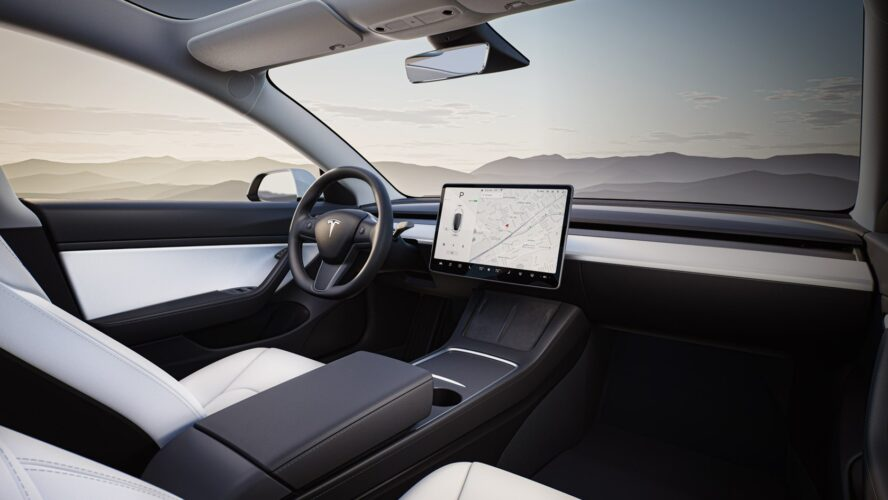

O Futuro Chegou? Três Novas Tecnologias Surpreendentes
O desenvolvimento de novas tecnologias é uma das bases da manutenção e do progresso da espécie humana, e sempre gerou fascínio. Há anos, distintas formas de tecnologia são retratadas nas produções culturais, por exemplo. Na literatura, o tema começou a ser abordado no século XIX, com o surgimento do gênero de ficção científica. Já no cinema, muitas são as produções que se valem da narrativa futurista, com tecnologias que nos fazem querer viver nesses mundos utópicos. Os clássicos filmes “De Volta para o Futuro (1985)” e “Avatar (2009)” trazem exemplos de invenções tecnológicas que realmente impressionam.
1 – Robôs de entrega
Cada vez mais, atividades manuais vêm sendo substituídas pelo uso de máquinas, e no setor das entregas não tem sido diferente. Empresas pioneiras como a Starship Technologies, ou a Amazon, possuem programas de testes de frotas de robôs e drones de entrega.
Em 2019, a Amazon, com seu pequeno robô chamado Scout, realizou testes em Washington e na Califórnia. Por uma pequena taxa, o cliente selecionava seu produto e sua localização, e um robô autonomamente o entregava, a partir do desbloqueio do pedido no app.
2 – Edição genética
As ciências médicas têm feito esforços múltiplos para trazer uma melhor qualidade de vida para as pessoas, principalmente no desenvolvimento de tecnologias para o tratamento de doenças. Dentre elas, os experimentos sobre edição genética tem chamado atenção nos últimos anos. Conhecida como “prime editing” ou edição de qualidade, o procedimento, a grosso modo, permite que trechos de DNA sejam eliminados, permitindo sua substituição por novas sequências de genes, produzidas em laboratório. A ideia é corrigir mutações causadas por doenças hereditárias, como a anemia falciforme. As pesquisas têm sido animadoras, mas têm enfrentado inúmeras problematizações em relação às implicações científicas, éticas e sociais dessa prática.
3 – Carros Autônomos

Em 2021, os carros autônomos já são uma realidade presente. A empresa Tesla, por exemplo, do bilionário Elon Musk, se dedica a construir carros diferentes dos habituais. Além do design, suas funcionalidades chamam atenção, caracterizando os veículos como linha premium. O Tesla Model 3, por exemplo, não utiliza gasolina nem diesel, mas sim energia elétrica, além de contar com diversos sensores de proximidade e aceleração que permitem que o carro se guie sozinho, sem o esforço humano.
Em 1985, no filme “De Volta Para o Futuro”, conhecíamos a clássica cena que afirmava que 30 anos depois o mundo possuiria carros voadores. Por mais que hoje tenhamos a noção de que a previsão estava incorreta, carros como esse ainda são surpreendentes.
Nesta lista, você descobriu algumas tecnologias que já fazem parte do tempo presente, mas que ainda estão em desenvolvimento, ou são inacessíveis para a maioria das pessoas. Muitas outras inovações incríveis, por outro lado, já fazem parte do dia a dia de muita gente, como as videochamadas pela internet ou o desbloqueio por digital. E assim, a pergunta fica: o futuro chegou?